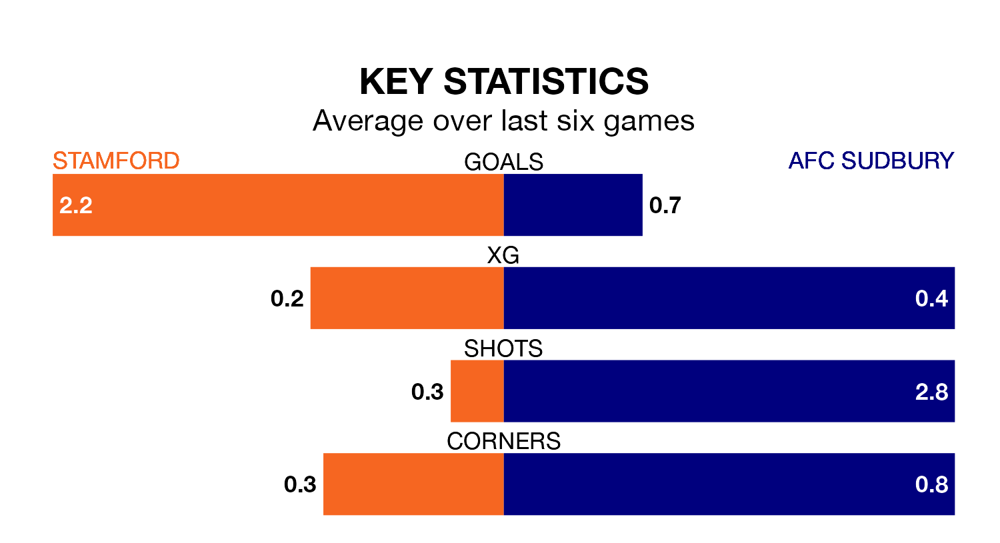

AFC Sudbury travel to the Zeeco Stadium looking to secure a first win in six Southern League Premier – Central games against Stamford on Saturday.
Sudbury have lost four and drawn one matches since they last earned three points – against Needham Market on January 1.
They face a Stamford side who have won two and drawn two over that time.
With 56 goals in 27 games so far this season, Stamford are the league's joint-third-highest scorers with 2.1 goals per game. But they are conceding more than average too, letting in 42 goals at a rate of 1.6 per game.
Sudbury, meanwhile, are below average scorers, with 1.3 goals per game, compared to a league average of 1.5. They have conceded 1.5 goals per game.
The away side are 19th in the table after 28 games, of which they have won seven and drawn seven, earning 28 points.
The hosts are 12 places ahead of Sudbury in seventh, with 12 wins and nine draws putting them on 45 points.
Stamford's last match was on February 3, a 1-1 draw against Stourbridge.
Sudbury lost 2-1 against Mickleover Sports last time out, also on February 3.
Updated: 14:59 (UTC), 05/02/24